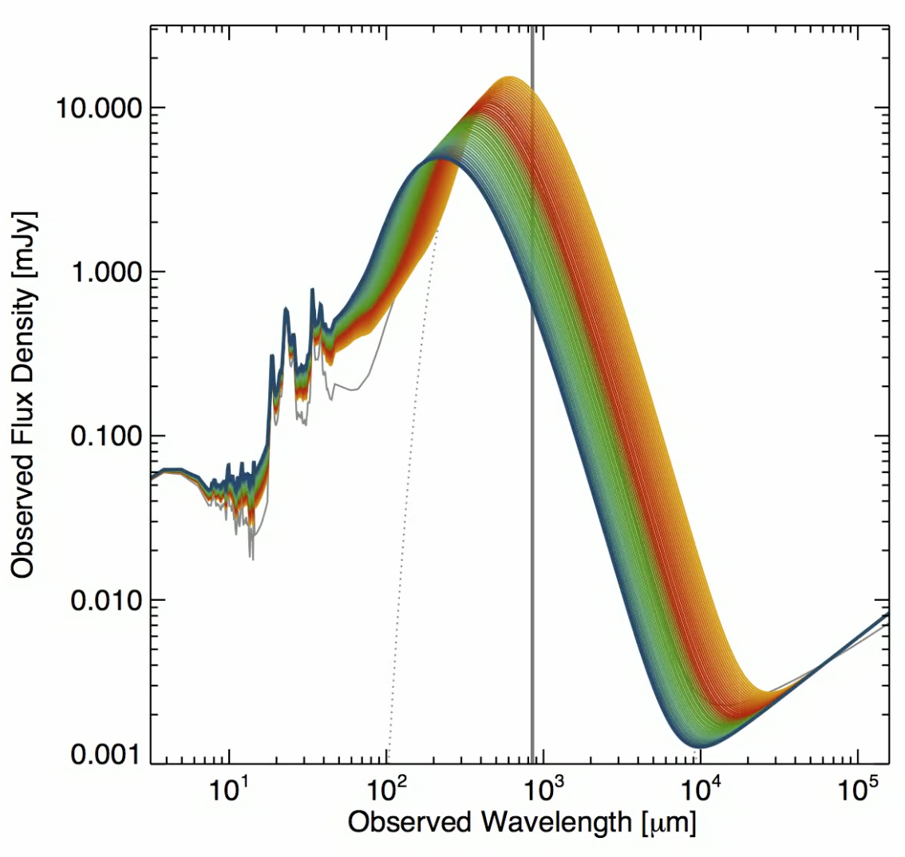
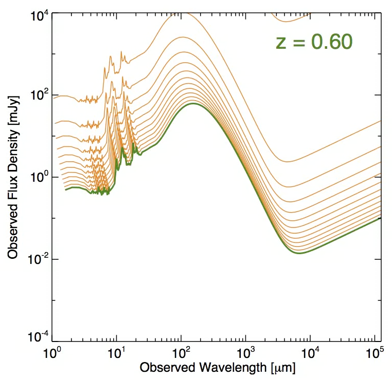

Animated Plots
The SMG Dust Temperature Bias
Here I illustrate how the SED of a z~2 dusty starburst varies with dust temperature. The redshift and integrated 8-1000um luminosity (thus nominal infrared star-formation rate) are fixed and dust temperature is allowed to vary within a reasonable range for starbursts. The vertical line marks the 850um detection band, corresponding to the nominal SCUBA, LABOCA and SCUBA-2 detection band, showing that only the coldest SEDs would be detectable at 850um.
The submillimeter's very negative K-correction
Here I push back a typical SED for a dusty starburst in redshift; we fix it’s rest-frame luminosity. While the mid-infrared and radio flux densities drop substantially with redshift, the submillimeter bands remain fairly constant beyond a redshift of z~1, thanks to the submillimeter’s very negative K-correction. (Note that having a negative K-correction is a necessary-but-not-sufficient condition for the roughly constant submillimeter flux density at high redshifts.)